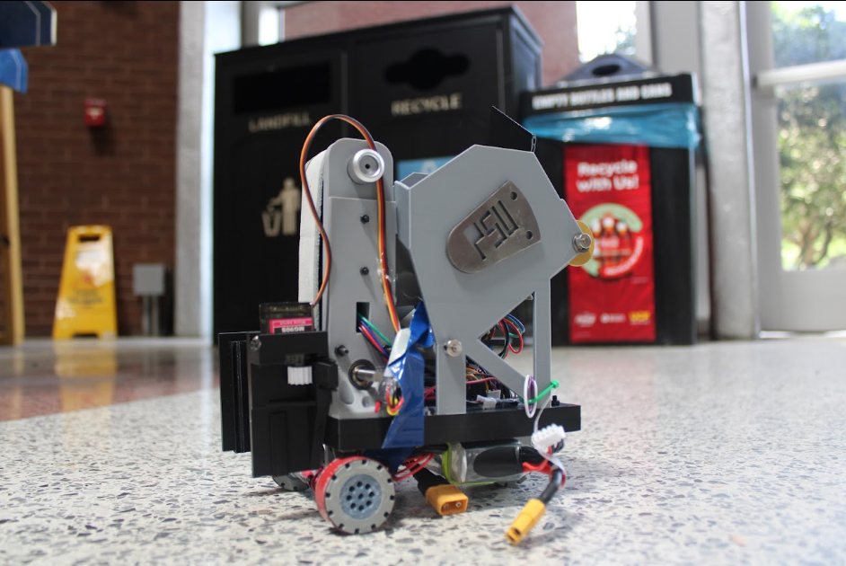
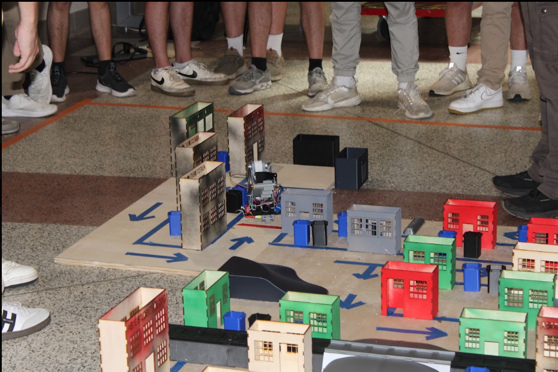
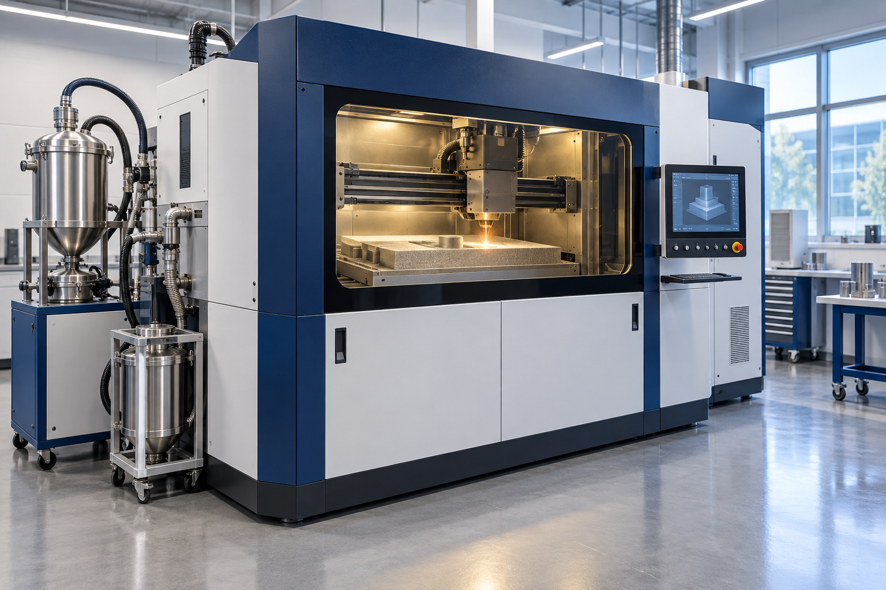
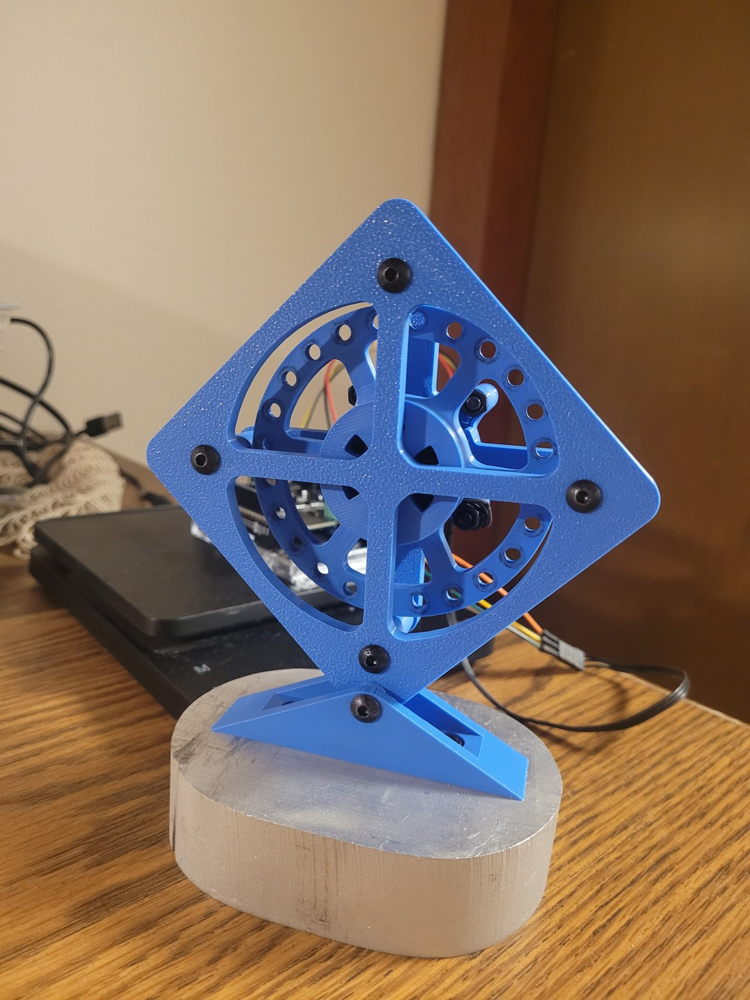

Penn State · Mechanical Engineering
Ideas take shape
when you
build them.
I’m Harsh. I work where mechanical design, hands-on manufacturing, and research meet—turning an engineering question into something I can build, measure, and understand.

01 / From CAD to competitionASME · EFx
SCHREYER HONORS COLLEGEMECHANICAL ENGINEERINGROBOTICS + METAL ADDITIVE MANUFACTURING
01 / Selected work
The build. The reasoning.
The lessons.
A closer look at what I contributed, how I approached the problem, and what each project taught me.

01 / ROBOTICS & MANUFACTURING
Making a robot
work in the real world.
From a drivetrain on screen to a robot on a competition course. My EFx experience built my manufacturing judgment—and shaped how I now lead a team.
Fusion 360DrivetrainManufacturing
Explore the case study ↗
02 / ADDITIVE MANUFACTURING RESEARCH
Industrial process illustration
Making the invisible
measurable.
Co-author of a published study in Additive Manufacturing Letters. Using synchrotron X-ray image analysis to study spatter and melt-pool behavior in multi-material laser powder bed fusion.
PythonImage analysisMetal AM
Explore the case study ↗
03 / MECHATRONICS & CONTROLS
Balance through
controlled motion.
An Arduino reaction-wheel stabilizer connects a physical build with the mechanics of angular momentum and feedback control.
ArduinoReaction wheelFeedback control
Explore the case study ↗02 / How I work
Building is how
I learn to ask
better questions.
I’m a mechanical engineering student in Penn State’s Schreyer Honors College. My work spans student robotics and undergraduate research in the S.H.A.P.E. Lab.
I’m drawn to projects that connect analysis with something physical: a drivetrain that has to fit, a frame that has to be interpreted, or a mechanism that has to respond.
01 / TAKE OWNERSHIPUnderstand the whole system.
Building the EFx drivetrain showed me how an individual design decision affects the rest of a robot. As a project lead, I bring that perspective to coordination and planning.
02 / MAKE IT OBSERVABLETurn images into evidence.
Research pushed me to think beyond an appealing visualization: consistent annotations, scale, timing, and repeatable processing make an image useful for analysis.
03 / CONNECT THEORY TO HARDWARELearn from the implementation.
The reaction-wheel project gives physical meaning to angular momentum, sensing, and feedback—and a reason to look closely at assumptions.